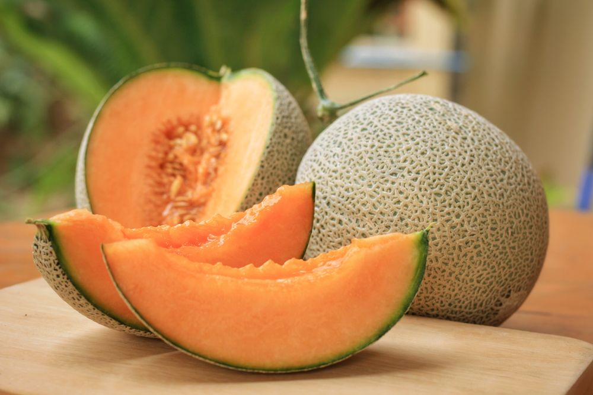

Freshness You Can Trust

Muskmelon is a sweet, juicy, and refreshing fruit that is rich in vitamins A and C, dietary fiber, potassium, and antioxidants. It helps keep the body hydrated, improves digestion, supports healthy skin and eyesight, and strengthens the immune system. Muskmelon is low in calories and high in water content, making it an excellent fruit for hot summer days. It can be enjoyed fresh, in fruit salads, smoothies, or juices.